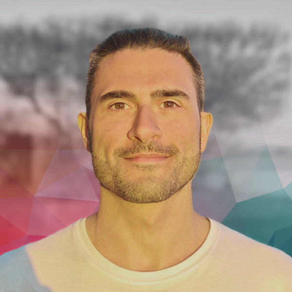

1
 Power BI
Power BI Qlik Cloud
Qlik Cloud Looker Studio
Looker Studio SQL Server
SQL Server
खोज
पृष्ठभूमि और उद्देश्यसमस्या, जिस फ़ैसले को बेहतर बनाना है, उससे जुड़े उपयोगकर्ता और अपेक्षित नतीजे को समझना।
डेटा विश्लेषण
Patrones Lab रोज़मर्रा की वास्तविक घटनाओं को डेटा के ज़रिए समझने की प्रयोगशाला है।
यहाँ सार्वजनिक डेटा पर आधारित स्वतंत्र परियोजनाएँ हैं। इनमें पैटर्न खोजे जाते हैं, व्यवहार को समझा जाता है और निष्कर्ष उनके संदर्भ के साथ पेश किए जाते हैं।
मकसद है सवाल उठाना, डेटा तैयार करना, स्पष्ट विश्लेषण करना और नतीजों को दृश्य रूप देना।

मैं Malcolm Di Pietro Cagliari हूँ, पेशे से बीमांकक और डेटा व एनालिटिक्स विशेषज्ञ। मेरे काम में बिज़नेस इंटेलिजेंस, कॉरपोरेट रिपोर्टिंग, डेटा मॉडलिंग और पूर्वानुमान विश्लेषण शामिल हैं। मुझे बैंकिंग, बीमा और हवाई परिवहन जैसे क्षेत्रों का अनुभव है।
मेरी विशेषज्ञता कारोबारी ज़रूरतों को डेटा पर आधारित समाधानों से जोड़ने में है। मैं प्रमुख प्रदर्शन संकेतक (KPI) तय करता हूँ, जानकारी व्यवस्थित करता हूँ, डैशबोर्ड बनाता हूँ और ऐसे मॉडल विकसित करता हूँ जिनसे स्थिति बेहतर समझ में आए और संदर्भ के साथ फ़ैसले लिए जा सकें।
समस्या, जिस फ़ैसले को बेहतर बनाना है, उससे जुड़े उपयोगकर्ता और अपेक्षित नतीजे को समझना।
उपलब्ध डेटा स्रोतों की पहचान और उनकी उत्पत्ति, अद्यतन की आवृत्ति, विश्वसनीयता व प्रमुख सीमाओं की जाँच।
डेटा को व्यवस्थित करना, साफ़ करना और जोड़ना ताकि उसका एक सुसंगत और उपयोगी आधार बने।
तय लक्ष्य के अनुसार विश्लेषण, मॉडल या डैशबोर्ड तैयार करना।
जाँचना कि नतीजे सुसंगत और स्थिर हैं और कारोबारी हकीकत से मेल खाते हैं।
अंतिम काम का दस्तावेज़ तैयार करना, बार-बार होने वाली प्रक्रियाओं को स्वचालित करना और आगे के सुधारों में प्रतिक्रिया को ध्यान में रखना।
सार्वजनिक डेटा पर आधारित चुनिंदा परियोजनाएँ, उनकी कार्यपद्धति और नतीजों की दृश्य प्रस्तुति। विषय, टूल या तैयार सामग्री के प्रकार के अनुसार ब्राउज़ करने के लिए फ़िल्टर लगाएँ।

AENA के सार्वजनिक डेटा से स्पेन के हवाई यातायात का विश्लेषण। इसमें यातायात की मात्रा, हर हवाई अड्डे के रुझान और श्रेणियों के बीच अंतर देखे गए हैं।

लंदन की Airbnb लिस्टिंग का शुरुआती विश्लेषण, जिसमें किराया, आवास के प्रकार, उपलब्धता, ठहरने की न्यूनतम अवधि और मोहल्लों के बीच अंतर की तुलना है।

शिकागो की टैक्सी यात्राओं की अवधि, माँग, भौगोलिक वितरण और संचालन के रुझानों का अध्ययन।

लॉजिस्टिक रिग्रेशन पर आधारित वर्गीकरण मॉडल, जो हर प्रकार के आवास में अपेक्षाकृत महँगी या सस्ती लिस्टिंग पहचानता है।

शिकागो की टैक्सी यात्राओं, संचालन संकेतकों, समय के अनुसार रुझानों और चढ़ने से उतरने तक के मार्गों को समझने के लिए Looker Studio में इंटरैक्टिव डैशबोर्ड।

StatsBomb के सार्वजनिक डेटा से हर शॉट पर गोल की संभावना निकालने वाला लॉजिस्टिक रिग्रेशन मॉडल। सत्यापन मैच के आधार पर हुआ और मॉडल क़तर विश्व कप 2022 पर लागू किया गया।
प्रोजेक्ट खोलें
StatsBomb के सार्वजनिक डेटा पर आधारित अपेक्षित खतरे का मॉडल, जो फ़ुटबॉल में अगली पाँच कार्रवाइयों में गोल होने की संभावना निकालता है।

✅ प्रकाशित
क्रेडिट कार्ड धोखाधड़ी की पहचान के लिए K-means से अपर्यवेक्षित क्लस्टरिंग।

✅ प्रकाशित
क्रेडिट कार्ड धोखाधड़ी की पहचान के लिए लॉजिस्टिक रिग्रेशन से पर्यवेक्षित वर्गीकरण।

✅ प्रकाशित
क्रेडिट कार्ड धोखाधड़ी के संभावित मामलों की पहचान के लिए DBSCAN से अपर्यवेक्षित क्लस्टरिंग।
प्रोजेक्ट खोलें
StatsBomb के सार्वजनिक डेटा से विश्व कप 2022 के आँकड़ों का विश्लेषण। प्रतिशतक रडार चार्ट से हर खिलाड़ी का प्रदर्शन समझ सकते हैं और खिलाड़ियों की तुलना कर सकते हैं।

शिकागो की टैक्सी यात्राओं का भू-स्थानिक विश्लेषण, जिससे सबसे व्यस्त इलाके, शहर के भीतर के मार्ग और माँग के केंद्र पहचाने जा सकें।

Spotify Charts का इंटरैक्टिव Power BI डैशबोर्ड, जिसमें स्ट्रीम, रैंकिंग, समय के साथ रुझान और अलग-अलग इलाकों में संगीत की लोकप्रियता देख सकते हैं।

✅ प्रकाशित
आपूर्तिकर्ताओं पर खर्च, महीने-दर-महीने बदलाव, श्रेणी के अनुसार हिस्सेदारी, बचत और भौगोलिक वितरण के विश्लेषण के लिए इंटरैक्टिव Power BI रिपोर्ट।

एलो रेटिंग के आधार पर विश्व कप 2026 के 10 लाख परिदृश्यों का सिमुलेशन, जिससे सेमीफ़ाइनल में पहुँचने, फ़ाइनल खेलने और चैंपियन बनने की संभावनाएँ आँकी गई हैं।

मौसमी घटनाओं से आर्थिक नुकसान का अनुमान लगाने वाला वर्गीकरण मॉडल, जिसमें लॉजिस्टिक रिग्रेशन की तुलना न्यूरल नेटवर्क से की गई है।

शहर के केंद्र से दूरी, मोहल्लों और आसपास के आवासों से जुड़े मापों के आधार पर लंदन में Airbnb किराये का भू-स्थानिक विश्लेषण।

ला लीगा 2026/27 के प्रमुख नतीजों की संभावना जानने के लिए एलो रेटिंग के आधार पर 10 लाख परिदृश्यों का सिमुलेशन।

प्वासों बंटन पर आधारित गोल मॉडल हर टीम की आक्रामक और रक्षात्मक ताकत निकालता है। इसके साथ मोंटे कार्लो सिमुलेशन से चैंपियनशिप के नतीजों की संभावनाएँ आँकी जाती हैं।

नेशंस लीग 2026/27 के 10 लाख परिदृश्यों का सिमुलेशन। एलो रेटिंग और प्वासों गोल मॉडल से ग्रुप जीतने, नॉकआउट दौर में आगे बढ़ने और ख़िताब जीतने की संभावनाएँ आँकी गई हैं।

चैंपियंस लीग 2026/27 के 36 क्लबों के शॉट और उन्हें गोल में बदलने की दर से गोलों और मैच के नतीजों की संभावनाएँ निकालने वाला द्विपद मॉडल।
पेशेवर अवसरों, डेटा विश्लेषण में सहयोग या BI, ML और डैशबोर्ड परियोजनाओं के लिए संपर्क करें।
ईमेल: malcolm@patroneslab.com
मुझे संदेश भेजें। मैं जल्द जवाब दूँगा।